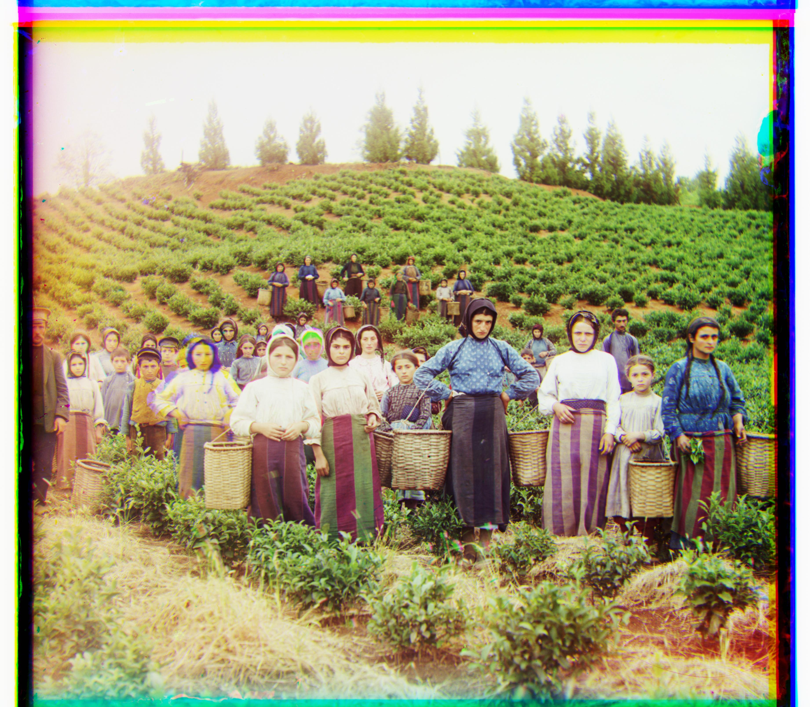
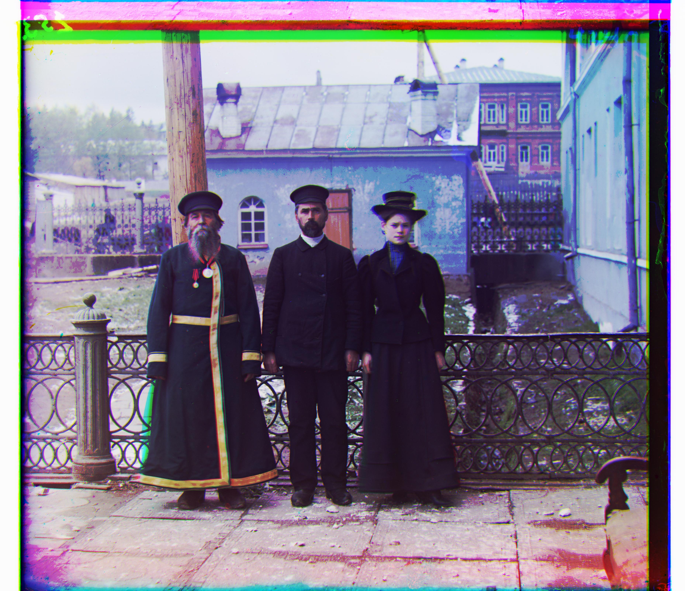

1. Overview
This project focuses on colorizing historical black-and-white photos taken by Sergei Mikhailovich Prokudin-Gorskii. The goal is to use image processing techniques to align and combine the three separate color channels—captured using blue, green, and red filters—into a single color image.
2. Approaches
The single channel images are processed and aligned to reconstruct full-color images.
I chose Sum of Squared Differences (SSD) as the alignment metric.
2.1 Alignment Process
- The alignment follows a two-step process: first aligning red to green, then blue to green, before stacking the three channels (aligned red, aligned blue, and green) to create the final image.
- Since most images have similar brightness across all color channels, aligning two channels with a third generally works. However, the Emir image presents a challenge because its green channel has a different brightness level from the other two. To handle this, I used the green channel as the reference and aligned the red and blue channels to it.
2.2 Single-Scale Alignment
- Initially, I attempted a single-scale alignment approach, which works well for low-resolution images.
- However, this method is slow and performs poorly on high-resolution images because it computes SSD over all image pixels at once. The abundance of fine details makes it difficult to determine the correct shift.
2.3 Multi-Scale Pyramid Alignment
- To improve efficiency and accuracy, I implemented a multi-scale pyramid alignment technique:
- Downscale the high-resolution image to a tiny version.
- Compute SSD and shift the image to align.
- Gradually upscale the image while refining the alignment at each level.
- Repeat this process until the image is restored to its original size.
- This approach improves speed and alignment accuracy, performing well on nearly all images.
3. Results
3.1 Single-Scale Alignment (Successful on Low-Res Images)
Example results using single-scale alignment:
cathedral

3.2 Multi-Scale Pyramid Alignment (Effective for Large Images)
The multi-scale pyramid method efficiently aligns most high-resolution images.
Cathedral
Emir
Harvesters
Icon
Lady
Self Portrait

Three Generations
Train

Turkmen
Village
However, the Emir image remained misaligned.
- This issue arises because the green channel has a different brightness level from the other two.
- To correct this, I aligned both the red and blue channels to the green channel instead.
- The improved aligned Emir image is shown below.
Emir Before
Emir After

3.3 More results from my own choice
The multi-scale pyramid method work well in my own chosen images from Prokudin-Gorskii Collection.
Adobe
Poliana
Grass
4. Bells & Whistles (Extra Credit)
4.1 PyTorch Reimplementation (2 points)
I reimplemented the alignment process using PyTorch tensors for improved computational efficiency. Check the implemented code in the codespace.
4.2 Automatic Contrast Adjustment (2 points)
I applied automatic contrast enhancement by:
- Rescaling brightness so that the minimum value is 0 and the maximum is 1.
- Adjusting brightness dynamically using a scaling factor of 1.2, increasing values above the average while decreasing those below.
- Applying adjustments differently across color channels based on their brightness levels.
- Clipping values to ensure they remain within the range.
Here are the images with automatic contrast enhancement applied:
Cathedral
Cathedral Contrast
Emir
Emir Contrast
Harvesters
Harvesters Contrast
Icon
Icon Contrast
Lady
Lady Contrast
Self Portrait
Self Portrait Contrast
Three Generations
Three Generations Contrast
Train